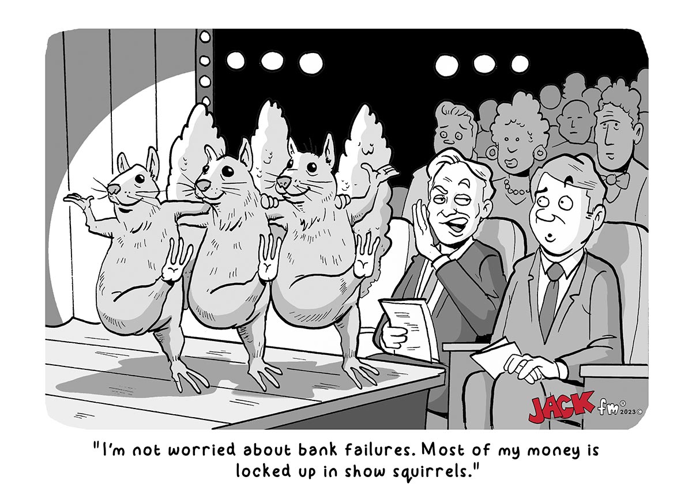

The station's website features a satirical newsletter with quirky tidbits about current events. For example, the current issue features an “advertisement” for Guns N Roses upcoming tour, showing an AARP sponsorship and boasting about the “Earlybird showtimes at 5:30”.
The website also has parody “clickbait-esque” ads making fun of tabloid headlines. One features a fake article about the Chinese spy balloon scare that has been in the media recently.
A sedition of their website is dedicated to weekly “political cartoons” which poke fun of everyone, sparing no political party or group of people. Viewers can rate the current week's cartoon on a scale of 5 using a Facebook like thumbs up icon.
